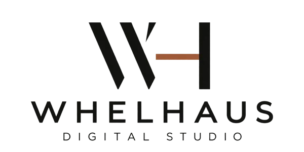

Retail and customer-facing businesses
Make your ranges, services and store information easy to browse. Our Gorey menswear project demonstrates how a website can support an established physical shop.

Web Design / Gorey, Co. Wexford
WHELHAUS creates websites for Gorey businesses, with real project experience in the town. Our work for Jack Dunne Menswear shows how clear service pages, thoughtful design and straightforward enquiry routes can help an established local retailer present its business online.
Website projects from €750.
Discuss your website →Gorey web design
For a Gorey retailer, your website may need to explain product ranges, specialist services, opening hours and how to visit the shop. For other local businesses, the priorities may be bookings, service enquiries or showcasing previous work. We build the page structure around the real customer journey.
See our website packages and SEO services for more detail.
Website packages
Starter websites begin at €750 for up to five core pages, business websites from €1,250 and bespoke projects from €1,750. Final pricing depends on the agreed pages, content and functionality.
Make your ranges, services and store information easy to browse. Our Gorey menswear project demonstrates how a website can support an established physical shop.
For businesses selling a service rather than a product, we focus on explaining the offer, answering common questions and helping customers make contact.
Gorey project spotlight
Jack Dunne Menswear is an independent Gorey retailer established in 1993. WHELHAUS built a responsive seven-page website to present menswear, wedding and formal hire, gift vouchers and store information in a clearer way.
The work included focused service pages, improved navigation, contact routes and local SEO foundations. These are delivered features, not claims of increased sales or rankings.
Questions answered
Yes. You can view our completed website and case study for Jack Dunne Menswear, an independent Gorey retailer.
Yes. A website can clearly present products, specialist services, opening hours and contact details without needing to be an online store.
We can discuss future functionality at the planning stage so the initial website fits your immediate budget and priorities.
Starter websites begin at €750 for up to five core pages. We provide an individual quote based on the agreed requirements.
Start a project
Tell us about your business in Gorey, what you need and what you'd like the website to achieve.
Start a project →